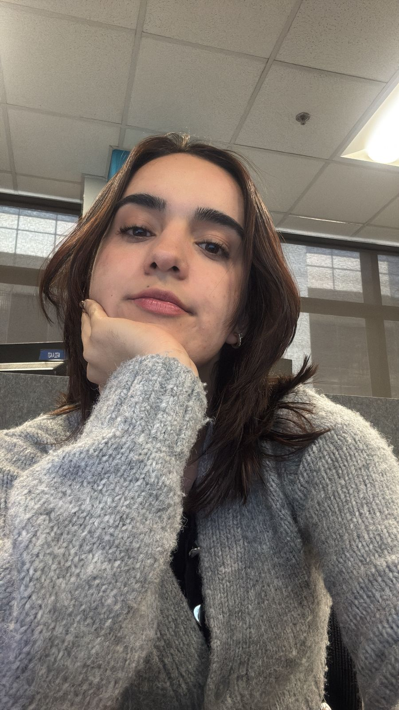

Ingeniería en Sistemas
Universidad Internacional de las Américas
2021 - Presente
Estudiante de Ingeniería en Sistemas • Web Developer Jr.
Portafolio personal & Currículum
Desde pequeña me ha gustado entender cómo funcionan las cosas, toda la vida me han dicho que estoy hecha para crear. Soy una persona alegre, perseverante y estoy apasionada por aprender, me encanta descubrir cosas nuevas, donde cada reto se convierte en una oportunidad para crecer. Actualmente curso la carrera de Ingeniería en Sistemas en la Universidad Internacional de las Américas, y me encuentro desarrollando mis habilidades técnicas y personales para seguir evolucionando profesionalmente.
Fuera del ámbito académico, disfruto mucho aprender a tocar el violín y mejorar constantemente mi dominio del idioma inglés, pues considero que ambos me ayudan a fortalecer la disciplina y la concentración. Además, soy voluntaria en un hogar infantil, una experiencia que me llena profundamente, ya que desde pequeña siento una gran conexión con los niños y disfruto compartir con ellos momentos de aprendizaje y alegría.
Soy una persona comprometida, optimista y con muchas ganas de seguir aprendiendo y creciendo, tanto a nivel personal como profesional.

Universidad Internacional de las Américas
2021 - Presente
CompTIA
2025 - Presente
Tecnológico de Costa Rica
2023
Liceo Experimental Bilingüe
2018 - 2020
Me gusta equilibrar mi tiempo entre la tecnología y actividades que fomentan mi creatividad.

En mi tiempo libre disfruto tocar el violín. La música me ha enseñado disciplina, constancia y la importancia de practicar un poquito cada día.

Me encantan las novelas de ficción e historical fiction. Leer me ayuda a ampliar mi forma de ver el mundo y a imaginar nuevas ideas.

Los videojuegos son mi forma favorita de relajarme y desarrollar pensamiento estratégico de manera divertida.
Si te interesa colaborar conmigo, hablar sobre algún proyecto o simplemente conectar, no dudes en escribirme!
 Correo:
ari.quiros02@gmail.com
Correo:
ari.quiros02@gmail.com
 Teléfono: +506 8363-9498
Teléfono: +506 8363-9498
 Ubicación: San José, Costa Rica
Ubicación: San José, Costa Rica
 GitHub:
github.com/ariquiros
GitHub:
github.com/ariquiros